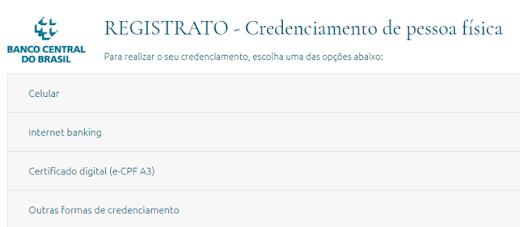
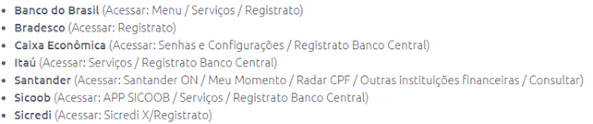

Quer saber se há fraudes envolvendo o seu CPF Conheça o Registrato!
Fonte: Uma vida mais rica
Nossos dados pessoais, como CPF (Cadastro de Pessoa Física), nome completo, data de nascimento, etc, estão
registrados em diversos bancos de dados que, apesar de apresentarem seus protocolos de segurança, não estão isentos de possíveis ataques.
Dentre os principais danos causados por fraudadores estão a utilização de CPF de terceiros para tentar obter crédito
(ao obter empréstimos com o CPF de outra pessoa, o fraudador não paga a dívida, deixando o nome do titular do CPF sujo); contratação de serviços com o
CPF da vítima (um dos principais serviços contratados com a utilização de CPF de terceiros envolvem serviços de telefonia); compras utilizando dados
do cartão de crédito de terceiros, ou mesmo, clonagem de cartão de crédito. Em alguns casos, o fraudador tenta emitir um cartão de crédito utilizando
o CPF da vítima, modalidade que, quando descoberta pelo titular do CPF, o fraudador já pode ter feito grandes dívidas em nome da vítima do golpe.
Isso mostra como a segurança de nossos dados pessoais é, de certa forma, vulnerável. Portanto, é de extrema
importância uma consulta periódica à situação de seu CPF perante o mercado. E uma das formas de se obter informações dos seus
relacionamentos financeiros é através do Registrato.
Mas afinal, o que é o Registrato?
Registrato é um sistema administrado pelo Banco Central do Brasil (BACEN), onde os cidadãos podem consultar
o seu registro financeiro. Esse serviço está disponível tanto para PF (pessoa física) quanto para PJ (pessoa jurídica).
Trata-se de um importante serviço gratuito disponibilizado pelo BACEN onde você pode consultar diversas
informações financeiras atreladas a seu CPF. Porém, por questão de sigilo dos dados, não é possível acessar informações de terceiros.
Com o Registrato, você pode consultar as contas bancárias abertas e encerradas em seu nome, sendo possível, assim,
descobrir se foi aberta indevidamente alguma conta bancária em seu nome. Consegue-se também consultar as dívidas atreladas a seu CPF, podendo,
dessa forma, descobrir possíveis dívidas em seu CPF devido a fraudes bancárias.
O Registrato é um sistema extremamente útil, gratuito, para consulta de seus dados financeiros, mas, ainda
assim, é de pouco conhecimento dos cidadãos. Por isso, o Jornal Teu Espaço quer mostrar a vocês como é fácil ter acesso a suas informações
através do Registrato.
A segue abaixo um passo-a-passo para se ter acesso ao Registrato:
Passo a passo para a utilização do Registrato:
1. Primeiramente, é necessário fazer o seu credenciamento.
Acesse o site do Banco Central através do link abaixo:
Em “Primeiro Acesso”, selecione a opção desejada: se PF ou PJ. Vamos usar o exemplo do credenciamento para
PF. Ao selecionar essa opção, aparecerá a tela abaixo, que mostra as diversas opções para você se credenciar:

Credenciamento por celular ou tablet
Clicando nessa opção, você deverá abrir o App do seu banco no seu celular ou tablet, e seguir o
passo-a-passo listado para cada banco a fim de obter o PIN para efetuar o credenciamento.
Essa opção está disponível apenas para as seguintes instituições financeiras:

Em posse do PIN obtido no App do seu banco, você irá utilizá-lo para efetuar o credenciamento no site do
Banco Central.
Para quem não possui conta em nenhuma das instituições financeiras listadas acima, é possível efetuar o seu
Credenciamento através das seguintes opções:
Credenciamento via Internet Banking
Para se credenciar via Internet Banking, seguir os passos abaixo:
Credenciamento via Certificado Digital (e-CPF A-3):
Há o detalhamento no site d BACEN, porém, há um custo para adquirir um Certificado Digital, sendo assim,
menos prático e vantajoso.
Outras formas de Credenciamento
Ir até à sede do Banco Central do Brasil, em Brasília, opção suspensa no momento devido à pandemia da
COVID-19.
Outra opção é através de correspondência, opção também suspensa devido à pandemia.
Ou ainda, utilizar Protocolo Digital para obter o acesso às suas informações.
As duas últimas opções de credeciamento, obviamente, são pouco práticas, por isso, as mais usuais serão o Credenciamento por Celular, ou via Internet Banking.
Opções de consulta oferecidas pelo Registrato
Após acessar o Registrato, é possível ter acesso a 4 categorias de informações:
1. Minhas Chaves PIX
2. Meus Endividamentos (SCR)
3. Meus Relacionamentos Financeiros (CCS)
4. Minhas Operações de Câmbio
Minhas Chaves PIX
Nessa seção, você terá acesso a todas as chaves PIX cadastradas em todas as Instituições financeiras em que
você possua conta.
Meus Endividamentos (SCR)
Nessa seção, através do sistema SCR (Sistema de Informações de Crédito), é possível efetuar a consulta de
todos os empréstimos, operações de crédito (mostra, por exemplo, as faturas de cartão de crédito. Ainda que você pague as suas faturas
sempre em dia, por ser uma operação de crédito, elas também aparecem aqui) e financiamentos que você tenha feito dos últimos 5 anos.
Através dessa consulta, se por ventura, algum fraudador efetuou algum empréstimo utilizando o seu CPF, você
conseguirá descobrir em que instituição financeira e em que data essa operação foi feita, podendo, a partir daí, tomar as providências
cabíveis.
Meus Relacionamentos Financeiros (CCS)
Nessa seção, é possível consultar em quais instituições financeiras você possui conta aberta, mostra também
as contas bancárias já encerradas.
Todas essas consultas são feitas através do sistema CCS (Cadastro de Clientes no Sistema Financeiro Nacional).
As informações obtidas nessa seção são imprescindíveis para evitar, por exemplo, situações em que a pessoa
vai até à agência de um determinado banco encerrar a sua conta bancária, mas o respectivo banco não efetua o encerramento de fato
(situação muito comum de ocorrer com grandes bancos comerciais). Com isso, o banco continua cobrando tarifas de uma conta bancária que
deveria ter sido encerrada e não está sendo utilizada. Dessa forma, o indivíduo, quando descobre, já tem uma dívida enorme com o banco por
este não ter encerrado a sua conta.
Além disso, se um fraudador utilizar o seu CPF para abrir uma conta bancária em seu nome, através do
Registrato, você consegue descobrir quando essa conta foi aberta, podendo, a partir disso, tomar as providências necessárias.
Minhas Operações de Câmbio
Aqui você pode consultar todas as operações de câmbio que você já efetuou com as instituições autorizadas
pelo BACEN.
Importância do Registrato contra fraudes
Além de servir para consultas gerais, sendo o extrato da vida financeira do cidadão, de forma prática e
gratuita, o Registrato pode ser utilizado como uma importante ferramenta contra fraudes, ajudando assim, na manutenção de um Sistema
Financeiro Nacional ainda mais confiável e seguro.
Veja Mais+
Vídeo de bebê sorrindo ao cortar cabelo pela 1ª vez viraliza e ganha mais de 35 milhões de visualizações
Levi viralizou na internet com sua sua primeira ida ao cabeleireiro. Com 200 mil seguidores no Tik Tok,
família não esperava tamanha repercussão.

.png "Quer saber se há fraudes envolvendo o seu CPF Conheça o Registrato!")
.png "Quer saber se há fraudes envolvendo o seu CPF Conheça o Registrato!")